Create and Run a Standard microCT Analysis
standard-report.RmdThis is a step-by-step guide to running a standard microCT analysis
using klct. It assumes you already have your data exported
from the NeoScan scanner into CSV files.
Create an RStudio Project
The first step is to create a folder that will contain your data and analysis.
First, open RStudio. Then, create a new RStudio project:
File > New Project...
Select New Directory:
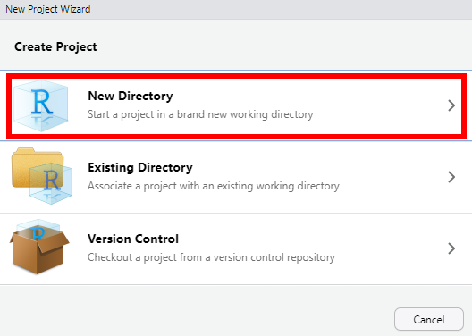
Select New Project:
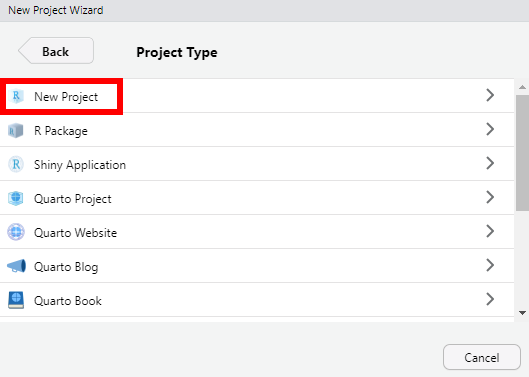
Type the name of the folder you would like to create, and select the
location you would like to create the folder. Then click
Create Project:
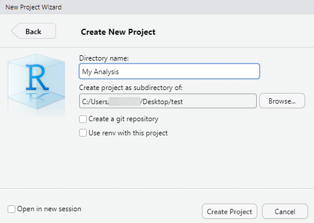
You should now have a new folder which contains a .Rproj
file with the name of the project and possibly a
.Rproj.user folder.
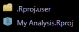
These are safe to ignore, but don’t delete or move them.
Prepare Your Data
Create a subfolder called data inside your project
folder. Place the following CSV files into the data
folder:
-
mouse-table.csv– A lookup table defining each sample’s Animal ID, AS (key registry) number, sex, and treatment (required). -
spine_trabecular_data.csv– Trabecular bone data for the lumbar vertebra. -
femur_metaphysis_data.csv– Combined cortical and trabecular bone data for the femoral metaphysis. -
femur_diaphysis_data.csv– Cortical bone data for the femoral diaphysis.
Your project folder should now look something like this:
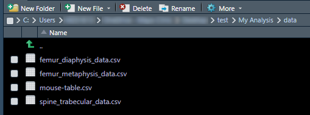
These files technically can be renamed whatever you want, but you will have to update the file names in the analysis report. I’ll show you how to do that below.
The Mouse Table
The mouse table CSV file maps each animal’s AS number to its sex and
treatment (or genotype). It should have the columns
Animal ID (optional), AS, Sex,
and Treatment (or Genotype). For example:
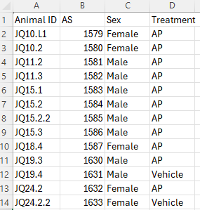
Sex can be coded as Female/Male,
F/M, or female/male
— klct will standardize these to F and
M.
The Data Files
The data CSV files are created by the neoscan-data-assembler
software tool, which assembles CSV files from the tab-separated text
files produced by the NeoWorks program. Each file should contain an
AS column that matches the AS numbers in the mouse table,
along with the bone measurement columns. For example, the spine
trabecular data file might look like this:
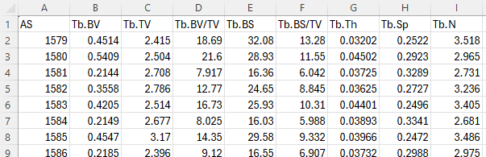
Generate the Analysis Template
Click the Addins button at the top of RStudio:
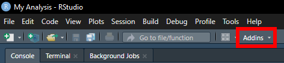
Under the klct heading, select the template that matches
your analysis design:
- NeoScan Two Treatment Comparison Setup — Compares two treatment groups with each sex analyzed separately.
- NeoScan Two Treatment Two Sex Comparison Setup — Runs a full two-way (Treatment × Sex) analysis.
Mayo-themed versions of each template are also available.
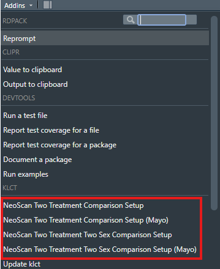
You should now have a new .Rmd file labeled with today’s
date in your project folder:
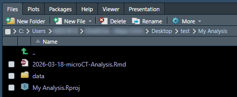
Alternatively, you can generate the template from the R console:
For Mayo-themed templates, add mayo = TRUE:
create_two_treatment_comparison(mayo = TRUE)
# or
create_two_treatment_two_sex_comparison(mayo = TRUE)Prepare the Report
Open the .Rmd file in RStudio. You can do this by
clicking on the file name in the Files pane.
The .Rmd file is just a text file, and it should now be
open for editing within RStudio:
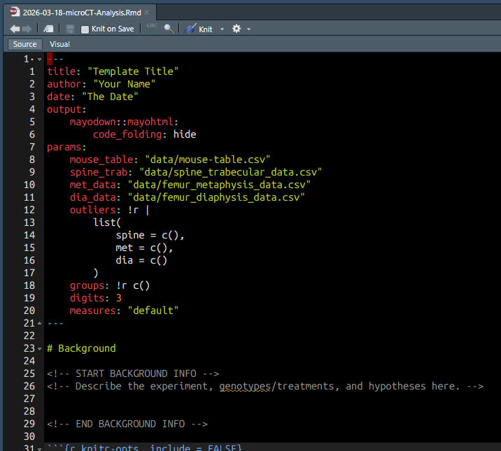
Edit the Metadata
At the top of the file, replace Template Title with the
title you’d like to give the report, Your Name with your
name, and The Date with today’s date.
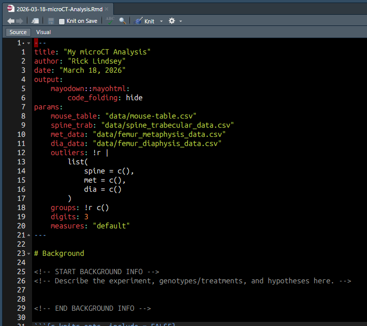
Update File Paths (if needed)
Below the title information, the params section contains
the file paths to your data files:
params:
mouse_table: "data/mouse-table.csv"
spine_trab: "data/spine_trabecular_data.csv"
met_data: "data/femur_metaphysis_data.csv"
dia_data: "data/femur_diaphysis_data.csv"If you have renamed any of the files or placed them somewhere other
than the data folder, update the file paths here.
Specify Outliers (optional)
To exclude specific animals from the analysis, add their AS numbers
to the outliers parameter. Outliers are site-specific, so
you can exclude different animals from each skeletal site:
If you have excluded any outliers, you may wish to include an explanation (e.g., broken metaphysis). Scroll down until you see:
<!-- START OUTLIER INFO -->
<!-- Describe the reason(s) for excluding outliers, if relevant (e.g., broken met). -->
<!-- END OUTLIER INFO -->Add your explanation in the empty space between
START OUTLIER INFO and END OUTLIER INFO.
Set Group Order (optional)
By default, groups are ordered alphabetically. To set a specific
order (e.g., to make the control group appear first), list the group
names in the groups parameter:
Choose Measures (optional)
The measures parameter controls which bone parameters
are analyzed:
-
"default"– Analyze a sensible subset of commonly reported parameters (the default). -
"all"– Analyze all detected parameters.
Add Background Information (optional)
Optionally, add background information about the project in the first
section of the document, between START BACKGROUND INFO and
END BACKGROUND INFO. This will appear at the top of the
final report.
<!-- START BACKGROUND INFO -->
<!-- Describe the experiment, genotypes/treatments, and hypotheses here. -->
<!-- END BACKGROUND INFO -->Don’t change anything else lower down in the file.
Run the Report
Make sure your file is saved by pressing Ctrl + S or
clicking the Save button:
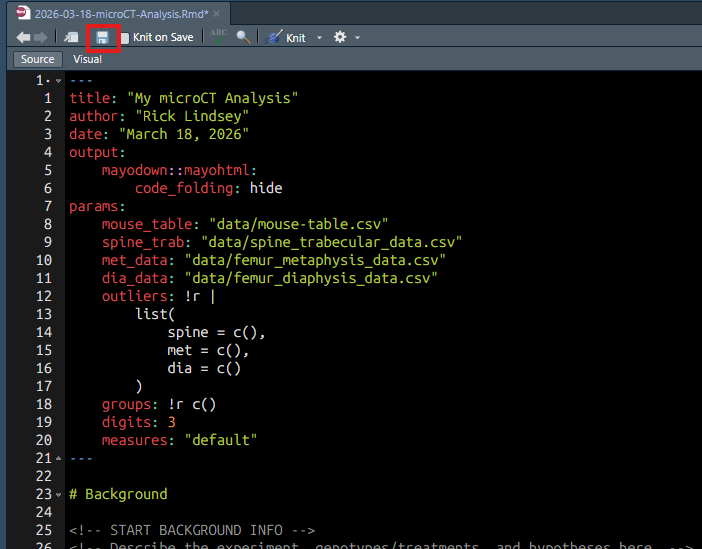
Now, generate the report by clicking Knit (or by
pressing Ctrl + Shift + K):
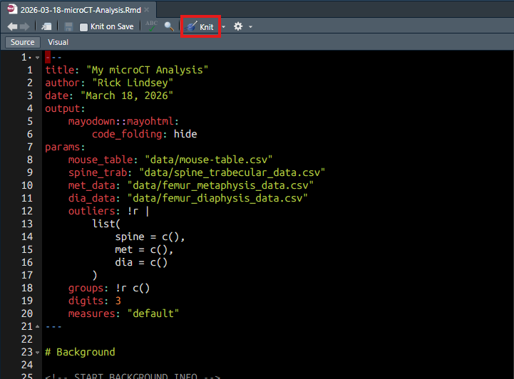
After a few seconds, the final report should appear in the
Viewer pane. The report contains tabbed sections for each
skeletal site, with separate tabs for parametric and nonparametric
results, plots, and raw data:
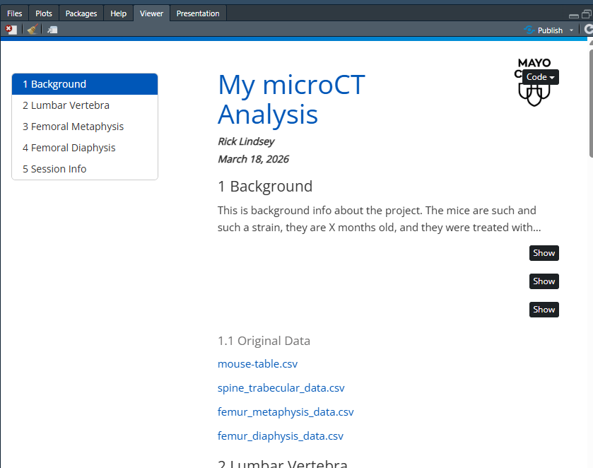
The final report is now in a .html file in your working
folder:
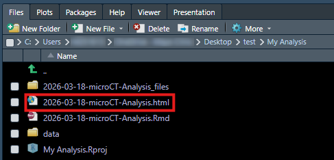
You can do anything you would do with a regular file with this
.html file: save it anywhere you like, attach it to an
email, etc. You can also double click it to open it in your default web
browser for easier viewing.